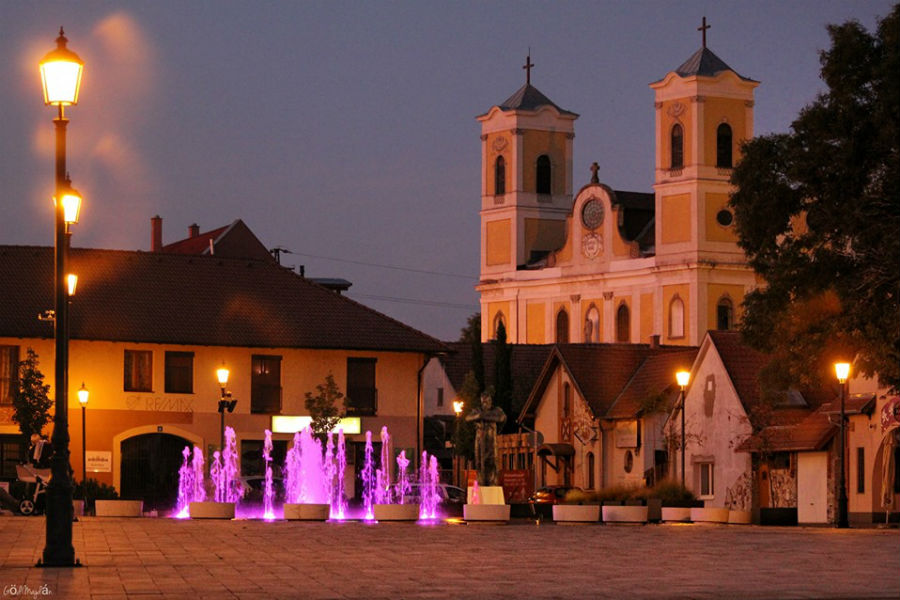
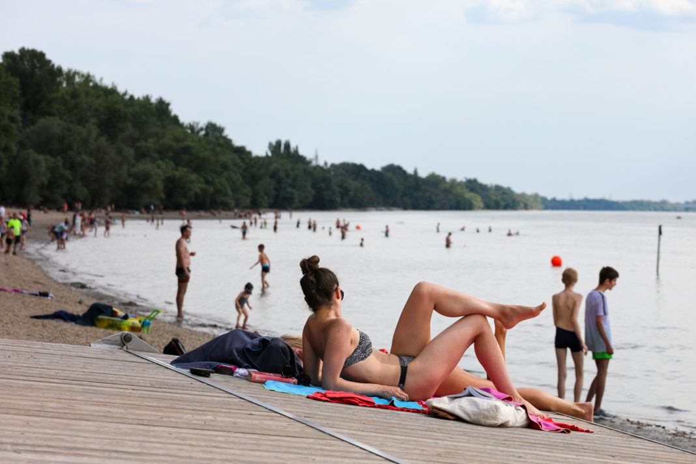

Dunakeszi City Center

Dunakeszi Free Beach

Dunakeszi Alag Horse Racing Track
Dunakeszi City Center
Dunakeszi Free Beach
Dunakeszi Alag Horse Racing Track
🏖️ Dunakeszi Free Beach (Dunakeszi Szabadstrand) During the summer months, the Dunakeszi Free Beach becomes one of the most popular places in town. Families, friends, and tourists gather to swim, relax, and enjoy the sunshine along the calm waters of the Danube. There are also small snack bars and grassy areas perfect for a picnic.
🚲 Danube River Promenade Take a relaxing stroll or rent a bike and ride along the beautiful Danube River. The promenade offers scenic views, peaceful nature, and fresh air – a perfect way to recharge and enjoy the slower pace of life outside the city.
🏇 Horse Riding and Equestrian Centers Dunakeszi is known for its strong equestrian traditions. Several riding schools and stables offer lessons for beginners and experienced riders alike. You can also watch horse shows and competitions throughout the year.

🏟️ Dunakeszi Városi Sportcsarnok (City Sports Hall) Sports enthusiasts will enjoy the modern sports hall, which hosts various events like basketball games, volleyball tournaments, and fitness programs. There are also opportunities for ice-skating in the winter months.
🏪 Dunakeszi Major Visit this local farm and market area where you can buy fresh produce, homemade goods, and local delicacies. It’s a great way to experience the region’s agricultural traditions and friendly community atmosphere.
🏞️ Parks and Outdoor Spaces Dunakeszi has many parks and green spaces perfect for families and nature lovers. Popular spots like Széchenyi Park offer playgrounds, walking paths, and shaded areas for relaxing.
🍝 Shopping and Dining The town offers a variety of cozy cafés, bakeries, restaurants, and shops. You can enjoy traditional Hungarian dishes, fresh pastries, and even international cuisine in a peaceful setting.
🥳 Festivals and Events Throughout the year, Dunakeszi hosts lively festivals, cultural programs, and community celebrations. From summer music festivals to Christmas markets, there's always something happening that brings locals and visitors together.
Your Local Guide to Dunakeszi
I have been living in Dunakeszi for over 33 years, and I know every corner of this beautiful town. If you need help discovering the best places, hidden gems, or simply want someone to guide you around, I am here for you! From the peaceful riverbanks to the lively festivals and cozy cafés, I’ll be happy to show you everything that makes Dunakeszi so special.
Feel free to contact me – whether you are planning a visit, moving here, or just curious – I’ll gladly help you experience Dunakeszi like a local!
Ranejin